|
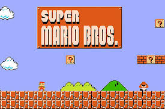
Super Mario BrosMario Bros. (マリオブラザーズ Mario Burazāzu, Hermanos Mario) es un videojuego de arcade desarrollado y publicado por Nintendo en 1983. Fue creado por Shigeru Miyamoto y Gunpei Yokoi, el ingeniero jefe de Nintendo. |
|
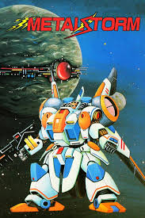
Metal stormMetal Storm es un videojuego de acción y plataformas desarrollado por Tamtex y publicado por Irem para Nintendo Entertainment System. |
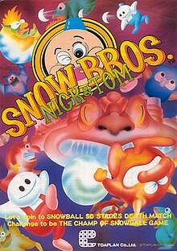
Snow BrosSnow Bros. es un videojuego arcade de plataformas de 1990 desarrollado originalmente por Toaplan, publicado primero en Japón, luego en Norteamérica por Romstar y más tarde en Europa. Protagonizado por los muñecos de nieve gemelos Nick y Tom, los jugadores tienen la tarea de viajar a través de 50 etapas, lanzando y construyendo bolas de nieve, saltando sobre plataformas y fuera de ellas para superar obstáculos de nivel mientras esquivan y derrotan monstruos para rescatar a las princesas Puripuri y Puchipuchi del cautiverio. |
|
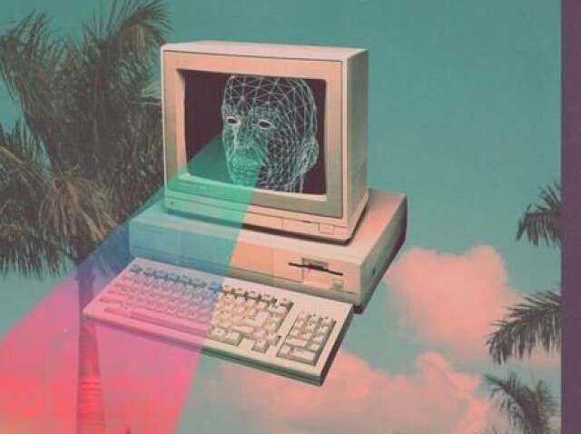
VaporWaveVaporwave es una estética y un género musical que surgió a principios de la década de 2010 y está profundamente ligado a la nostalgia por la cultura pop de los 80 y 90, así como a una crítica del consumismo y la tecnología.
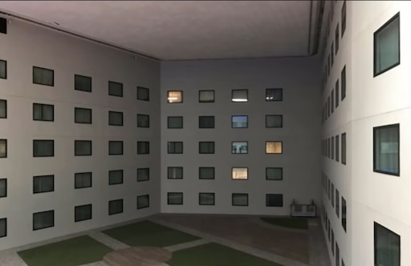
Espacios LiminalesLos espacios liminales son una estética visual y conceptual que se enfoca en lugares de transición o intermedios, que suelen provocar una sensación de desconcierto, nostalgia o inquietud. Son espacios que parecen estar atrapados "entre" momentos o propósitos, lo que los hace sentirse extraños y descontextualizados.
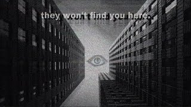
voidcoreEnfatiza la sensación de vacío y nihilismo. Suele incluir imágenes de grandes espacios y oscuros, como cielos nocturnos, agujeros negros, y paisajes desolados. |
foros populares
a continuación se adjuntan 7 imagenes de otros sitios web con sus respectivos nombres como ideas de referencia
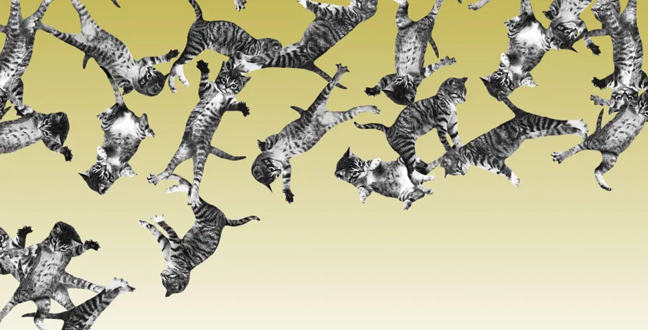Esta imagen pertenece al sitio web cat bounce, es una idea divertida para pasar el tiempo
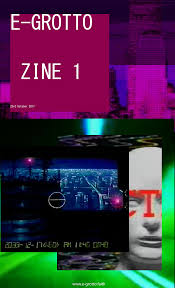Grotto.faith, una pagina web muy interesante con una estetica algo incomoda y misteriosa
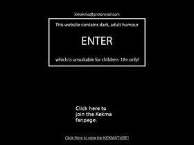Esta pagina es peligrosa por su contenido y no apta para todo tipo de personas debido a que incluye sonidos fuertes e imagenes traumatizantes sin embargo se ha vuelto muy popular
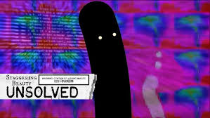Aqui puedes encontrar algo divertido para pasar el tiempo al igual que cat bounce la diferencia es que esta pagina no es apta para personas epilepticas
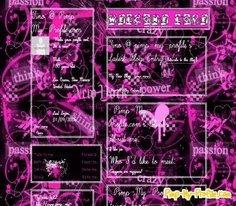My space fue una pagina muy importante y reconocida en los años 2000, aun sigue teniendo su impacto, esta fue un gran exponente de los grupos scene y emo.
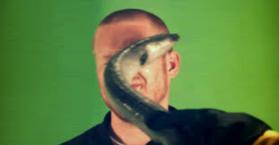Este curioso sitio web nos permite ver como un hombre es golpeado con una angila en la cara
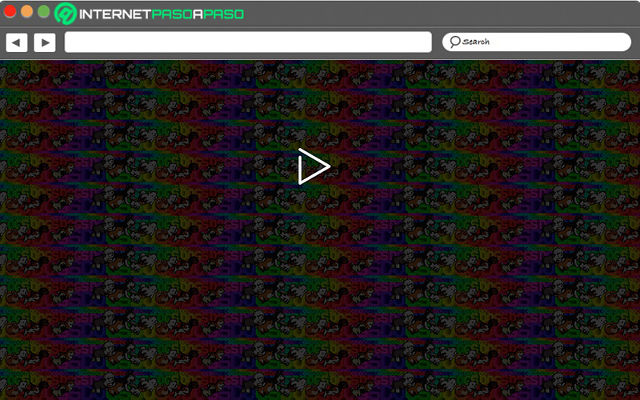Esta linda pagina web nos muestra unas animaciones de perros corriendo por la pantalla del ordenador, nos permite dar donaciones a los perros abandonados y que pueden ser adoptados